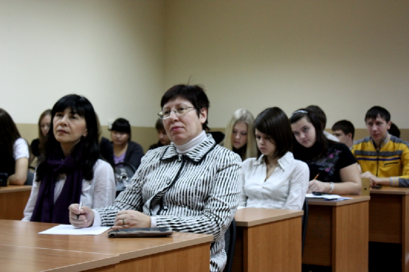
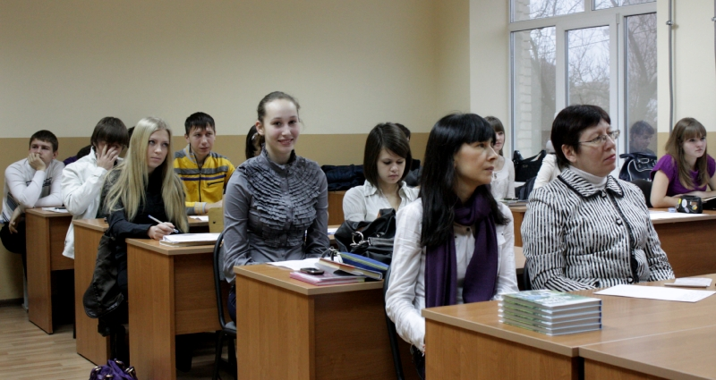
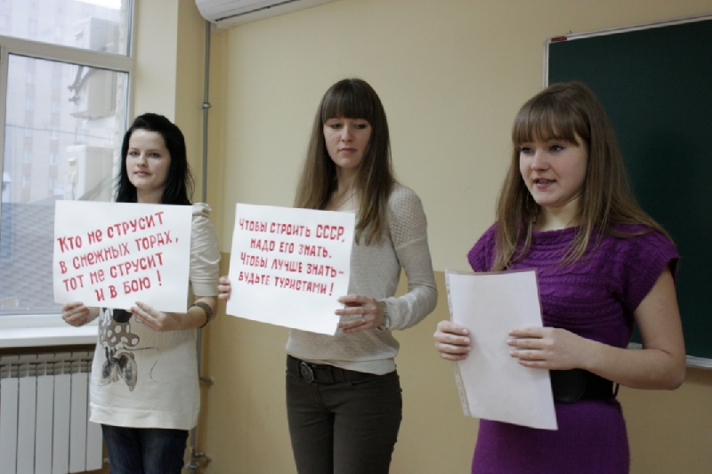
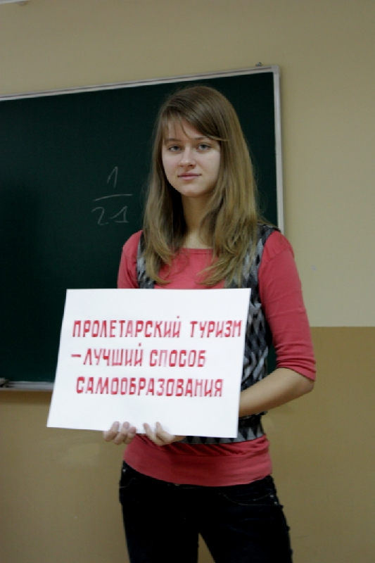
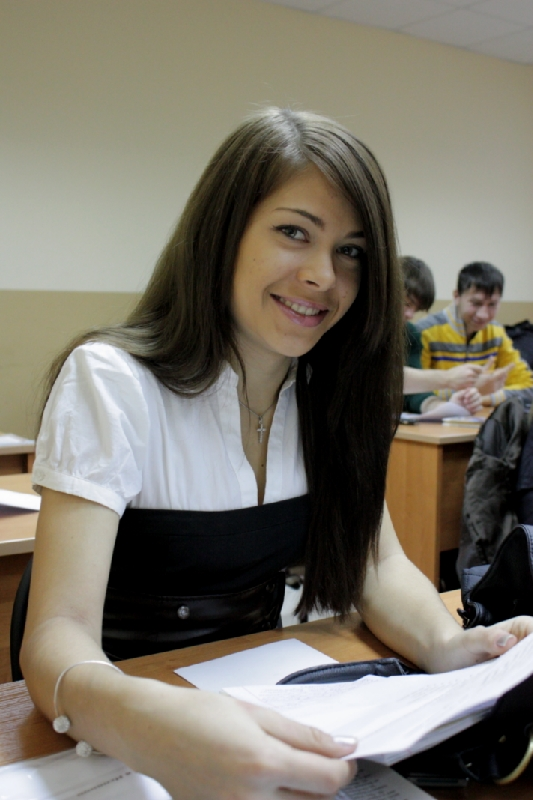
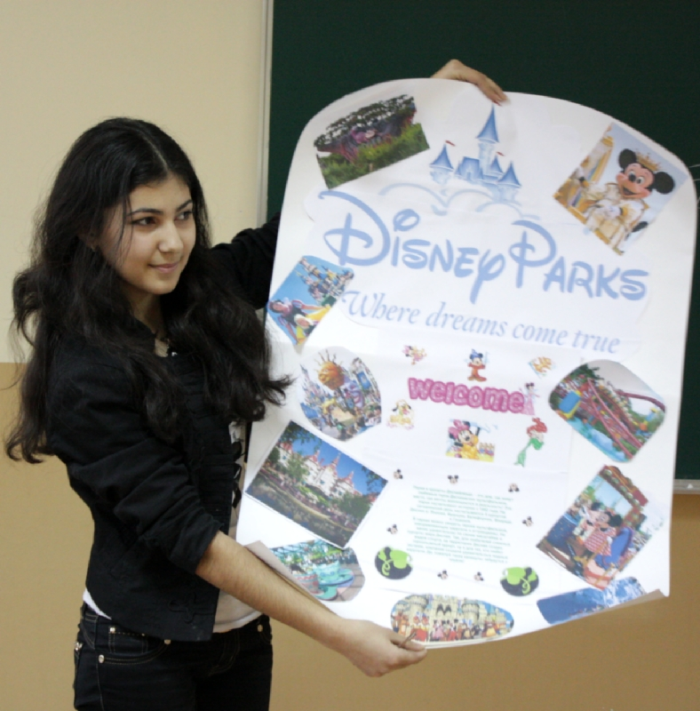
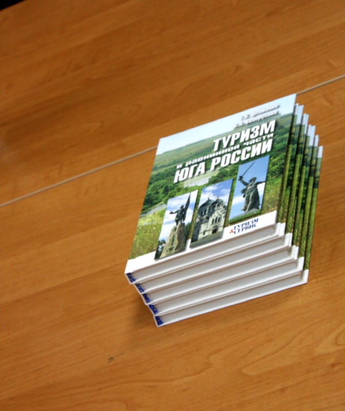
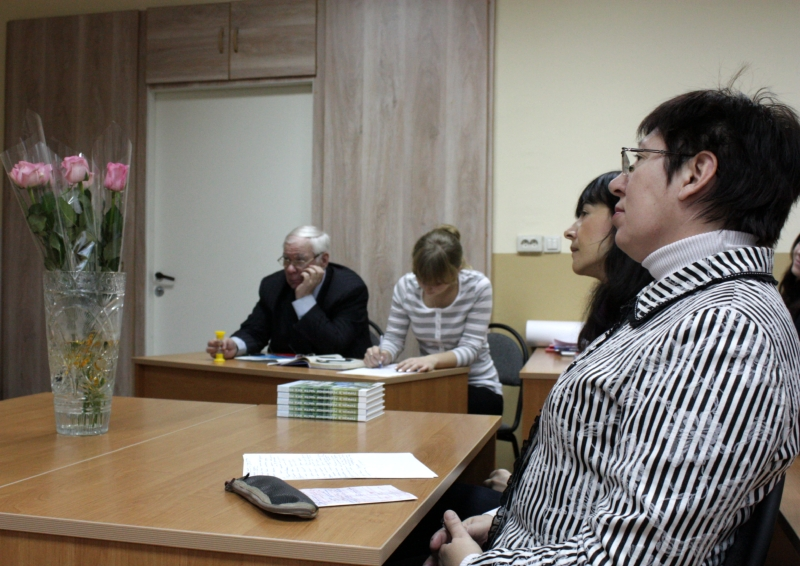

Учебный процесс
Я - Константин Морозов приехал учиться в ЮФУ из Зернограда. Думаю, что умею достойно фотографировать. Но не настолько профессионально, как хотелось бы. Сделал много фоторепортажей в школе.
Это моя первая творческая работа в университете за 1- ый семестр обучения по специальности «Туризм». Я сделал репортаж о зачетном занятии по любимому нами предмету «Основы туризма». Проходило оно в не традиционной форме.
Геннадий Петрович раздал всем темы. Перед нами стояла задача в течение двух минут представить небольшое сообщение на выбранную тему. Причем выступление докладчика должно было быть настолько эмоциальным, доступным, достоверным и ярким, чтобы у присутствующих в аудитории возникло ощущение будто перед ними высоко квалифицированный менеджер по туризму. Задача была не из легких, но такой креативных подход в обучении понравился, безусловно, всем! Время фиксировалось песочными часами. Упала последняя песчинка – закругляйся, для завершения давалось еще 30 сек. Таким образом, за одну «пару» мы вспомнили основные темы курса. А в конце занятия заведующая кафедрой общей географии, краеведения и туризма Ольга Васильевна объективно оценила выступление каждого, дала полезные рекомендации, которые обязательно пригодятся нам в дальнейшем обучении, и вручила призы лучшим докладчикам.
 Строгий, но по-матерински заботливый взгляд заведующей кафедрой Ольги Васильевны
 Все волнуются, одна Алиса позирует «Главное хорошо выглядеть» - думает Алиса (А. Лазаренко)


Четыре девицы восхваляют ОПТЭ: «Ах, как хорошо быть пролетарским туристом. И Родину познаешь, и в бою не струсишь!»
(О. Пожарская, Н. Обущенко, А. Братко, А. Мишакина)
 Всегда спокойная, всегда уверенная в своих талантах. «Волноваться? А зачем? Чему научили в ЮФУ, то и знаю» (В. Снежко)
 Маленькая, да удаленькая, постоянно впереди планеты всей. Отличница по жизни Оксана (О. Узунян)


Призы и цветы для лучших.
Лучший подарок студенту – туризмоведу - книга, ведающая о туризме.
Сегодня это «Туризм в равнинной части Юга России» Г.П. Долженко
и С.А. Белорусовой.